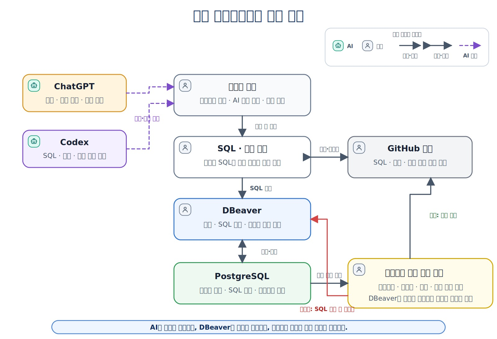
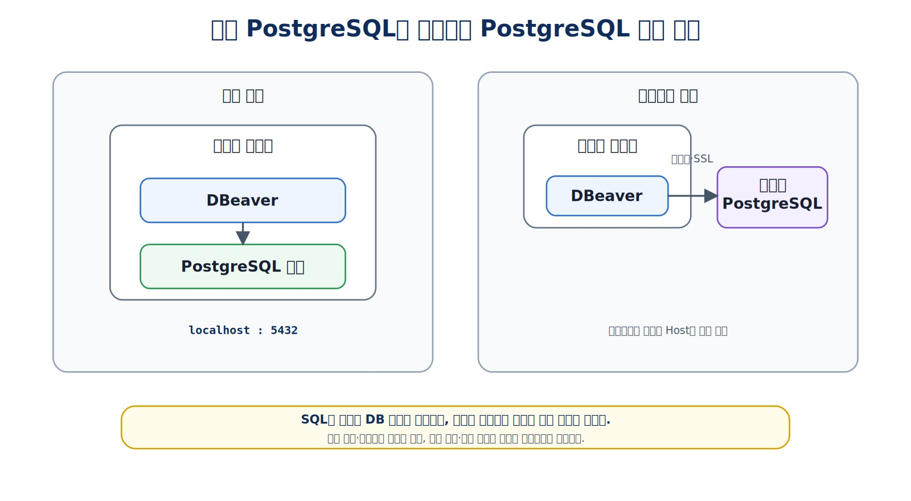
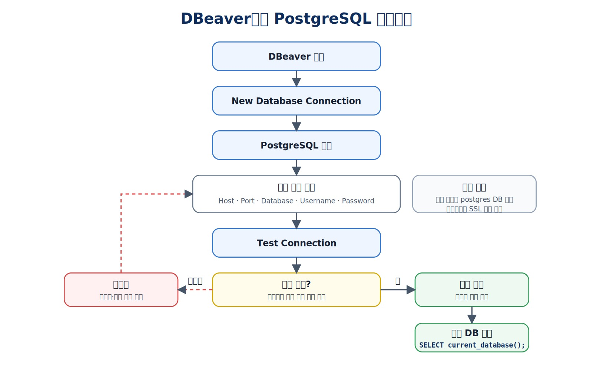
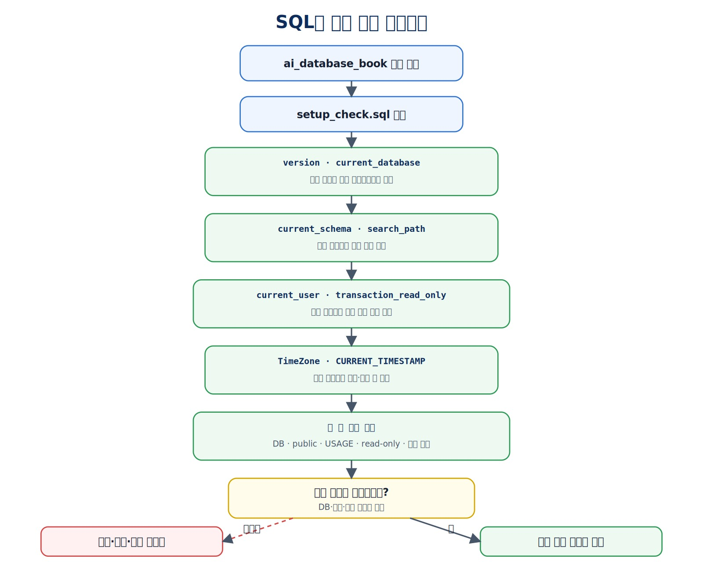
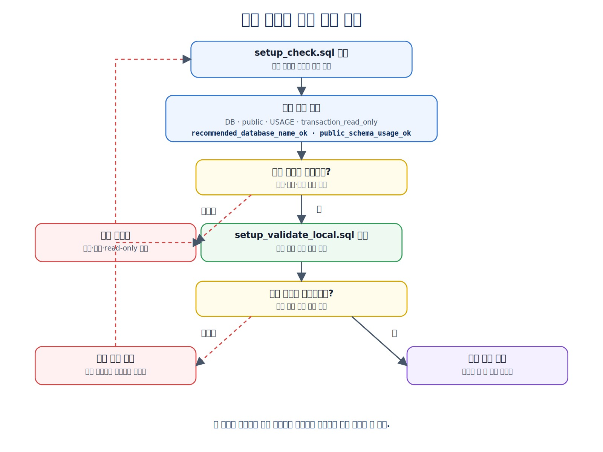
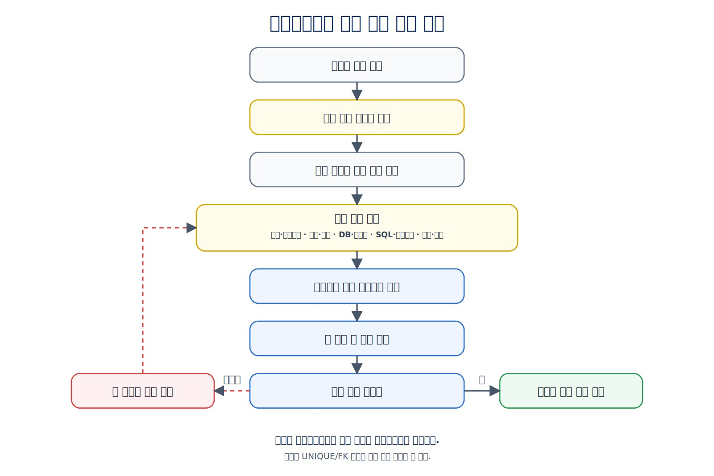

PostgreSQL과 DBeaver로 실습 환경 만들기
설치 화면을 따라가는 데서 끝나지 않고 PostgreSQL 서버가 실행되고, DBeaver 연결이 성공하며, 현재 데이터베이스·사용자·스키마와 SQL 실행 범위를 직접 확인할 수 있는 상태를 만드는 것이 이번 장의 목표입니다.
지금 어느 데이터베이스에 어떤 사용자로 연결되어 있는지 어떻게 확인할까?
이 장을 시작하기 전에
이 장은 PostgreSQL을 처음 설치하고 사용하는 독자를 대상으로 합니다. Chapter 02에서 데이터베이스, DBMS, 클라이언트와 스키마의 의미를 이해했다면 별도의 선수 지식은 필요하지 않습니다.
운영체제와 프로그램 버전에 따라 설치 화면, 메뉴 이름과 버튼 위치가 달라질 수 있습니다. 화면을 그대로 따라 하기보다 다음 상태를 만드는 데 집중합니다.
PostgreSQL 서버가 실행된다.
DBeaver에서 연결 테스트가 성공한다.
ai_database_book 데이터베이스에 연결된다.
현재 연결 대상을 SQL로 확인한다.
SQL 한 문장과 전체 스크립트 실행을 구분한다.
환경 확인 파일을 다시 실행할 수 있다.
이 책의 SQL은 PostgreSQL 15 이상을 기준으로 작성했습니다. 화면 예시는 집필 당시 환경을 기준으로 하며 최신 버전에서는 메뉴와 화면 배치가 달라질 수 있습니다.
권장 기본 경로와 대안 경로
처음 시작하는 독자에게는 다음 환경을 권장합니다.
권장 기본 경로
→ 로컬 PostgreSQL + DBeaver Community
이미 다른 환경이 준비되어 있다면 반드시 같은 설치 방법을 사용할 필요는 없습니다.
| 현재 상황 | 권장 진행 |
|---|---|
| Windows에서 처음 설치 | 본문의 Windows 기본 경로 사용 |
| PostgreSQL이 이미 설치됨 | 설치를 생략하고 서버 상태와 버전 확인 |
| macOS 사용 | 선택 학습의 macOS 설치 경로 참고 |
| Ubuntu 계열 Linux 사용 | 선택 학습의 Ubuntu 설치 경로 참고 |
| 프로그램 설치 권한이 없음 | 관리형 PostgreSQL 또는 제공된 원격 서버 검토 |
| Docker 사용 경험이 있음 | 컨테이너 기반 PostgreSQL을 선택적으로 사용 |
환경이 달라도 이 장의 기본 완료 기준을 만족하면 다음 장의 실습을 진행할 수 있습니다. 다만 저장소에서 제공하는 setup_validate_local.sql은 이름 그대로 권장 로컬 환경을 확인하는 파일이며, 관리형 환경에서는 일부 조건이 다를 수 있습니다.
이 장을 마치면
다음 작업을 수행할 수 있습니다.
- PostgreSQL과 DBeaver의 역할을 구분한다.
- 자신의 환경에 맞는 설치 경로를 선택한다.
- PostgreSQL 서버의 실행 상태를 확인한다.
- DBeaver에서 PostgreSQL 연결을 만든다.
- Host, Port, Database와 Username의 의미를 설명한다.
ai_database_book데이터베이스를 확인하고 필요한 경우 생성한다.- 새 데이터베이스로 연결을 전환한다.
- 현재 데이터베이스, 사용자, 스키마와 검색 경로를 확인한다.
- SQL 한 문장, 선택 영역과 전체 스크립트 실행을 구분한다.
- 환경 확인 SQL과 자동 확인 SQL을 실행한다.
- 연결 오류를 유형별로 분류하고 다시 확인한다.
- 비밀번호와 전체 접속 URL을 공개 자료에서 분리한다.
학습 표시
- 핵심 학습: 권장 기본 환경을 준비하는 데 필요한 내용
- 선택 학습: 다른 운영체제, Docker와 관리형 PostgreSQL을 사용하는 경우 참고할 내용
- 심화 학습: 권한, 비밀정보 파일과 운영 환경으로 확장되는 내용
1. 이 장에서 준비할 환경
이 책의 기본 실습 환경은 다음과 같습니다.
로컬 PostgreSQL 서버
+ DBeaver Community
+ 저장해 둔 SQL 파일
| 구성 요소 | 역할 |
|---|---|
| PostgreSQL | 데이터를 저장하고 SQL을 실행하는 관계형 DBMS |
| DBeaver | PostgreSQL에 연결해 SQL을 작성하고 결과를 보여 주는 클라이언트 |
| SQL 파일 | 실행 과정과 확인 기준을 다시 실행할 수 있게 보존 |
| Git 저장소 | SQL과 문서의 변경 이력을 선택적으로 관리 |
| AI 도구 | 오류 설명과 SQL 초안 작성을 보조 |

그림 3-1 전체 데이터베이스 작업 환경
공식 다운로드 페이지는 다음과 같습니다.
- PostgreSQL: https://www.postgresql.org/download/
- DBeaver Community: https://dbeaver.io/download/
설치 프로그램의 정확한 최신 버전은 다운로드 시점에 공식 페이지에서 확인합니다.
기본 완료 기준
| 단계 | 확인할 상태 |
|---|---|
| PostgreSQL 서버 | 실행 중이며 접속할 수 있음 |
| DBeaver | 연결 테스트 성공 |
| 작업 데이터베이스 | ai_database_book에 연결 |
| SQL 실행 | SELECT 1 + 1; 결과가 2 |
| 현재 위치 | 데이터베이스와 사용자를 SQL로 확인 |
| 실행 범위 | 한 문장과 전체 스크립트를 구분 |
| 환경 자동 확인 | 권장 로컬 환경에서 검증 파일 통과 |
| 보안 | 공개 파일에 실제 비밀번호와 전체 접속 URL이 없음 |
2. PostgreSQL과 DBeaver 역할 복습
PostgreSQL과 DBeaver는 같은 종류의 프로그램이 아닙니다.
| 구분 | PostgreSQL | DBeaver |
|---|---|---|
| 종류 | DBMS·데이터베이스 서버 | 데이터베이스 클라이언트 |
| 주요 역할 | 데이터 저장과 SQL 실행 | 서버 연결, SQL 작성과 결과 표시 |
| 데이터 보관 | 실제 데이터를 보관 | 연결 정보와 화면 설정을 관리할 수 있지만 DB 데이터를 직접 보관하지 않음 |
| 프로그램 종료 | 서버가 중지되면 접속할 수 없음 | DBeaver만 닫히며 서버 데이터는 유지 |
사용자
→ DBeaver에서 SQL 작성
→ PostgreSQL에 SQL 전달
→ PostgreSQL이 SQL 실행
→ DBeaver가 결과 또는 오류 표시
DBeaver만 설치했다고 PostgreSQL 서버가 준비되는 것은 아닙니다. 반대로 PostgreSQL은 psql, Python 프로그램, 웹 애플리케이션과 다른 개발 도구에서도 접속할 수 있습니다. 이 책에서는 구조와 결과를 화면으로 확인하기 쉬운 DBeaver를 기본 클라이언트로 사용합니다.
3. 나에게 맞는 설치 경로 선택하기
3.1 권장 기본 경로: 로컬 PostgreSQL
로컬 PostgreSQL은 자신의 컴퓨터에서 서버를 실행합니다.
장점:
- 인터넷 연결 없이 연습할 수 있다.
- 서버, 데이터베이스와 연결 구조를 직접 확인하기 쉽다.
- 테스트 데이터를 자유롭게 만들고 지울 수 있다.
확인할 점:
- 프로그램 설치 권한이 필요하다.
- PostgreSQL 서비스가 실행 중이어야 한다.
- 포트 충돌이나 기존 설치 여부를 확인해야 한다.
3.2 선택 학습: 관리형 PostgreSQL
관리형 PostgreSQL은 외부 플랫폼이 서버 운영의 일부를 담당합니다.
플랫폼이 주로 담당
→ 서버 인프라와 서비스 운영 기능
사용자가 계속 담당
→ 테이블 설계, 데이터 정확성, 권한, 비밀정보와 비용
관리형 환경은 인터넷, 계정, SSL과 서비스별 연결 설정이 필요합니다. 서비스별 세부 화면과 연결 방식은 빠르게 바뀔 수 있으므로 공식 문서를 함께 확인합니다.
3.3 선택 학습: Supabase 개요
Supabase는 별도의 단순화된 DBMS가 아니라 실제 PostgreSQL을 중심으로 Auth, Storage, Realtime 같은 기능을 연결한 플랫폼입니다.
Supabase 프로젝트
├── PostgreSQL
├── Auth
├── Storage
└── Realtime 등
로컬 PostgreSQL과 데이터베이스 이름, 연결 방식과 권한 구조가 다를 수 있습니다. 이 장에서는 이러한 차이가 있다는 점만 이해합니다. Pooler, API 키, RLS와 Storage 세부 운영은 서비스 공식 문서와 후속 심화 자료에서 다룹니다.
3.4 선택 학습: Docker
Docker 경험이 있는 독자는 PostgreSQL 컨테이너를 사용할 수 있습니다. 다만 다음 항목을 스스로 관리할 수 있어야 합니다.
컨테이너 포트 연결
데이터 볼륨 보존
관리자 비밀번호
컨테이너 시작·중지
DBeaver에서 사용할 Host와 Port
Docker가 처음이라면 PostgreSQL과 Docker를 동시에 배우기보다 운영체제용 설치 프로그램을 사용하는 편이 단순합니다.

그림 3-2 로컬과 관리형 PostgreSQL 연결 구조
4. PostgreSQL 설치와 서버 상태 확인
설치 화면보다 설치 후 상태가 중요합니다.
설치 성공
→ PostgreSQL 프로그램이 준비됨
서버 실행 성공
→ PostgreSQL 서비스가 실행 중임
연결 성공
→ 올바른 Host·Port·Database·Username으로 인증됨
SQL 실행 성공
→ 연결된 데이터베이스에서 SQL이 실행됨
이 네 단계는 서로 다릅니다. 설치가 완료되어도 서비스가 중지되어 있으면 연결할 수 없습니다.
4.1 Windows 기본 경로
설치할 때 다음 항목을 확인합니다.
- PostgreSQL Server
- 명령행 도구
- 관리자 사용자
postgres - 관리자 비밀번호
- 기본 포트 또는 직접 선택한 포트
- 데이터 저장 위치
Stack Builder는 추가 도구와 드라이버를 설치하는 도구이며 이 책의 기본 실습에는 필수가 아닙니다.
설치 후 Windows 서비스 관리 화면에서 PostgreSQL 서비스가 실행 중인지 확인합니다. 서비스 이름에는 버전 번호가 포함될 수 있습니다.
4.2 선택 학습: macOS
대표적인 설치 방식은 다음과 같습니다.
- PostgreSQL 다운로드 페이지에서 안내하는 설치 프로그램
- Postgres.app
- Homebrew
설치 방식마다 서버 시작 방법과 데이터 위치가 다릅니다. 사용한 방식의 공식 안내에서 서버 시작과 상태 확인 방법을 확인합니다.
4.3 선택 학습: Ubuntu 계열 Linux
대표적으로 패키지 관리자를 사용할 수 있습니다.
sudo apt update
sudo apt install postgresql
설치 후 서비스 상태와 실제 버전을 확인합니다. 배포판 저장소의 PostgreSQL 버전은 PostgreSQL 공식 최신 버전과 다를 수 있습니다.
4.4 버전 확인
명령행 도구가 경로에 등록되어 있다면 다음 명령을 사용할 수 있습니다.
psql --version
명령이 인식되지 않더라도 서버 설치 실패라고 단정하지 않습니다. PATH 설정 문제일 수 있으므로 서버 서비스와 DBeaver 연결을 별도로 확인합니다.
5. DBeaver 설치하기
DBeaver Community를 설치한 뒤 처음 PostgreSQL 연결을 만들 때 JDBC 드라이버 다운로드가 필요할 수 있습니다. 인터넷 연결이 제한된 환경에서는 드라이버 다운로드가 실패할 수 있습니다.
설치가 끝나면 다음을 확인합니다.
DBeaver가 실행된다.
새 데이터베이스 연결 메뉴를 열 수 있다.
PostgreSQL 연결 유형을 선택할 수 있다.
DBeaver 메뉴와 단축키는 버전과 운영체제에 따라 다를 수 있습니다. 기능 이름과 현재 선택된 실행 범위를 기준으로 판단합니다.
6. PostgreSQL 연결 만들기
처음에는 설치 과정에서 일반적으로 만들어지는 postgres 데이터베이스에 연결합니다.
| 항목 | 일반적인 로컬 값 | 의미 |
|---|---|---|
| Host | localhost |
PostgreSQL 서버 주소 |
| Port | 5432 |
서버가 연결을 받는 포트 |
| Database | postgres |
처음 접속할 데이터베이스 |
| Username | postgres |
처음 접속할 로그인 역할 |
| Password | 설치할 때 설정한 값 | 인증 정보 |

그림 3-3 DBeaver 연결 구성
postgres는 사용자 이름과 데이터베이스 이름에 모두 나타날 수 있습니다.
postgres 사용자
→ PostgreSQL에 로그인하는 관리자 역할
postgres 데이터베이스
→ 설치할 때 일반적으로 생성되는 기본 데이터베이스
Test Connection이 성공하면 서버, 네트워크, 인증과 지정한 데이터베이스 접속이 가능하다는 뜻입니다. 하지만 다른 데이터베이스의 존재나 실제 변경 권한, public 스키마의 USAGE·CREATE 권한까지 모두 확인한 것은 아닙니다.
연결 이름 권장 예시
연결이 늘어날 때 혼동을 줄이기 위해 의미 있는 이름을 사용합니다.
local-postgres-admin
local-ai-database-book
비밀번호, 실제 서버 주소의 민감한 부분과 개인 식별정보는 연결 이름에 넣지 않습니다.
7. 연결 정보 이해하기
연결 오류를 해결하려면 각 값의 의미를 알아야 합니다.
Host
→ 어느 서버에 연결하는가
Port
→ 서버의 어느 연결 통로를 사용하는가
Database
→ 서버 안의 어느 데이터베이스에 접속하는가
Username
→ 어떤 PostgreSQL 역할로 로그인하는가
Password
→ 해당 역할의 인증 정보
같은 서버와 사용자라도 Database 값이 다르면 서로 다른 데이터베이스에 접속할 수 있습니다. 데이터베이스를 새로 만들었다고 기존 연결의 Database 값이 자동으로 바뀌지는 않습니다.
8. 작업용 데이터베이스 준비하기
이 책에서는 ai_database_book을 작업용 데이터베이스로 사용합니다.
8.1 기존 데이터베이스 확인
먼저 postgres 데이터베이스에 연결한 상태에서 존재 여부와 소유자를 확인합니다.
SELECT datname,
pg_get_userbyid(datdba) AS database_owner
FROM pg_database
WHERE datname = 'ai_database_book';
결과가 0행이면 같은 이름의 데이터베이스가 없습니다. 1행이면 이미 존재하므로 바로 삭제하거나 다시 만들지 않습니다.
기존 데이터베이스가 있다면 다음을 확인합니다.
누가 소유하고 있는가?
기존 스키마와 테이블이 있는가?
이 책의 연습용으로 계속 사용해도 되는가?
보존해야 할 데이터가 있는가?
8.2 필요한 경우 생성
데이터베이스가 없고 생성 권한이 있다면 다음 문장을 실행합니다.
CREATE DATABASE ai_database_book;
CREATE DATABASE는 열린 트랜잭션 안에서 실행할 수 없습니다. DBeaver의 Auto-commit 상태를 확인하고, 다른 SQL과 함께 전체 스크립트로 실행하지 말고 해당 문장만 선택해 실행합니다.
대표 오류:
already exists
→ 같은 이름의 데이터베이스가 이미 있음
permission denied to create database
→ 현재 사용자에게 생성 권한이 없음
cannot run inside a transaction block
→ 열린 트랜잭션이나 실행 방식 확인 필요
관리자 계정의 범위
개인 컴퓨터의 연습 환경을 처음 구성할 때는
postgres관리자 역할을 사용할 수 있습니다. 실제 애플리케이션이나 공용 서버에서는 관리자 역할 대신 목적에 맞는 전용 사용자와 최소 권한을 사용합니다. 역할과 권한은 Chapter 11에서 자세히 다룹니다.
9. ai_database_book으로 다시 연결하기
데이터베이스를 생성해도 현재 연결이 자동으로 이동하지 않습니다.
데이터베이스 생성
≠ 현재 연결 대상 변경
다음 중 한 방법을 사용합니다.
- 새 연결을 만들고 Database를
ai_database_book으로 지정한다. - 기존 연결을 복제한 뒤 Database 값만 변경한다.
- 기존 연결 설정을 수정하고 다시 연결한다.
새 연결에서 다음 SQL을 실행합니다.
SELECT current_database();
기대 결과:
ai_database_book
DBeaver 탐색기에서는 다음 위치를 확인합니다.
연결
→ ai_database_book
→ Schemas
→ public
→ Tables
Chapter 04에서 첫 테이블을 만들기 전에는 Tables가 비어 있어도 정상입니다.
10. 현재 데이터베이스와 스키마 확인하기
ai_database_book 연결에서 다음 SQL을 실행합니다.
SELECT current_database();
SELECT current_user;
SELECT current_schema();
SHOW search_path;
각 결과의 의미는 다음과 같습니다.
| SQL | 확인하는 내용 |
|---|---|
current_database() |
현재 연결된 데이터베이스 |
current_user |
현재 접속한 PostgreSQL 역할 |
current_schema() |
search_path에서 실제로 사용할 수 있는 첫 번째 스키마 |
SHOW search_path |
스키마 이름을 생략했을 때 객체를 찾는 순서 |
현재 스키마는 환경과 검색 경로에 따라 public이 아닐 수 있습니다. Chapter 04에서는 대상을 명확히 하기 위해 public.students처럼 스키마 이름을 함께 사용합니다.
다음 항목도 환경 확인 파일에서 참고할 수 있습니다.
SHOW transaction_read_only;
SHOW TimeZone;
transaction_read_only = off: 현재 트랜잭션이 읽기 전용으로 강제되지 않은 상태. 실제 변경 가능 여부는 데이터베이스·스키마·객체 권한에 따라 달라질 수 있음TimeZone: 날짜와 시각을 해석하고 표시할 때 사용하는 세션 시간대
이 장에서는 값을 확인하는 데 집중합니다. 읽기 전용 연결과 시간대 설정의 운영 원리는 후속 장에서 확장합니다.
11. SQL을 안전하게 실행하기
DBeaver에서는 실행 범위를 구분해야 합니다.
현재 문장 실행
→ 커서가 위치한 SQL 한 문장 실행
선택 영역 실행
→ 직접 선택한 SQL만 실행
전체 스크립트 실행
→ 편집기나 파일의 여러 문장 실행
단축키는 환경마다 다를 수 있으므로 실행 버튼의 기능 이름과 선택 영역을 확인합니다.
실행 전에 확인할 세 가지
1. 어느 데이터베이스에 연결되어 있는가?
2. 어떤 SQL이 선택되어 있는가?
3. Auto-commit 상태는 무엇인가?
Auto-commit에서는 성공한 변경 SQL이 즉시 확정될 수 있습니다. Manual commit에서는 Commit 또는 Rollback이 필요할 수 있습니다. 트랜잭션의 정확한 원리는 Chapter 09에서 다룹니다.
Chapter 09 전까지는 변경 SQL을 한 문장 또는 확인한 선택 영역 단위로 실행하는 습관을 권장합니다.
12. 환경 확인 파일 실행하기
저장소에는 두 개의 환경 확인 파일이 있습니다.
12.1 setup_check.sql
파일: setup_check.sql
이 파일은 환경 정보를 독자가 직접 읽고 확인하기 위한 조회문을 포함합니다.
PostgreSQL 버전
현재 데이터베이스
현재 스키마와 search_path
현재 사용자
읽기 전용 상태
TimeZone
현재 시각
간단한 SQL 계산

그림 3-4 SQL로 환경 정보 확인하기
이 파일은 정보를 보여 주지만 모든 조건을 자동으로 통과·실패 판정하지는 않습니다.
12.2 setup_validate_local.sql
이 파일은 권장 로컬 환경에서 다음 조건을 자동으로 확인합니다.
PostgreSQL 15 이상
현재 데이터베이스 = ai_database_book
현재 사용자의 CONNECT 권한
public 스키마 존재
public 스키마 USAGE 권한
public 스키마 CREATE 권한
읽기 전용 상태가 아님
기본 SQL 계산 정상
USAGE는 스키마 안의 객체를 참조할 때 필요한 권한이고, CREATE는 그 스키마에 새 객체를 만들 때 필요한 권한입니다. Chapter 04에서 public.students를 생성하려면 권장 로컬 경로에서 두 권한을 모두 확인하는 편이 안전합니다.
모두 통과하면 다음 메시지가 표시됩니다.
Chapter 03 recommended local environment validation passed

그림 3-5 환경 조회와 자동 확인 흐름
두 파일은 테이블과 업무 데이터를 생성·수정·삭제하지 않으므로 같은 연결에서 다시 실행할 수 있습니다.
관리형 PostgreSQL에서는 데이터베이스 이름, 권한과 읽기 전용 상태가 다를 수 있습니다. 이 경우 자동 확인 파일을 무조건 통과시키기 위해 권한을 변경하지 말고, 서비스 환경에서 Chapter 04의 테이블 생성이 가능한지 별도로 확인합니다.
13. 자주 발생하는 연결 오류 해결하기
먼저 문제의 단계를 구분합니다.
설치 문제
→ PostgreSQL 프로그램이나 서비스가 준비되지 않음
서버 실행 문제
→ 설치됐지만 PostgreSQL 서비스가 중지됨
연결 문제
→ 서버는 실행되지만 연결값이나 인증이 잘못됨
SQL 문제
→ 연결은 성공했지만 실행한 SQL에 문제가 있음
| 증상 또는 메시지 | 우선 확인할 내용 |
|---|---|
| Connection refused | 서버 서비스, Host, Port, 방화벽 |
| Password authentication failed | Username과 Password |
| Database does not exist | Database 값과 생성 여부 |
| Permission denied to create database | 접속 사용자와 데이터베이스 생성 권한 |
| Permission denied for schema public | 현재 사용자와 public 스키마의 CREATE 권한 |
| Cannot run inside a transaction block | 실행 범위, 열린 트랜잭션과 Auto-commit |
| 데이터베이스나 테이블이 보이지 않음 | 현재 Database, Schema, 필터와 새로고침 |
| SSL 또는 Host 오류 | SSL 설정, DNS와 네트워크 |
| 관리형 연결 시간 초과 | 서비스 연결 방식, 네트워크와 IP 지원 |

그림 3-6 데이터베이스 오류 해결 기본 흐름
공통 해결 순서:
1. 실행하려던 작업을 한 문장으로 정리한다.
2. 오류 메시지를 생략하지 않고 읽는다.
3. 서버 상태와 Host·Port·Database·Username을 확인한다.
4. 설치·서버·네트워크·인증·권한·DB·스키마·SQL 문제로 분류한다.
5. 한 번에 하나의 설정만 바꾼다.
6. 같은 작업을 다시 실행한다.
7. 해결 방법과 실제 결과를 기록한다.
선택 학습: AI에게 오류 질문하기
AI에게 질문할 때는 다음 정보를 제공하면 원인 분석에 도움이 됩니다.
운영체제
PostgreSQL 사용 방식: 로컬 / 관리형 / Docker
PostgreSQL과 DBeaver 버전
Host 일부 마스킹, Port, Database
실행한 작업
오류 원문
이미 확인한 내용
Auto-commit 상태
비밀번호, 전체 접속 URL, API 키와 Access Token은 포함하지 않습니다. AI가 제안한 해결 방법은 한 번에 하나씩 적용하고 실제 재실행 결과로 확인합니다.
14. 비밀번호와 접속 정보 보호하기
Chapter 03에서는 다음 원칙만 우선 기억합니다.
비밀번호를 SQL 파일에 작성하지 않는다.
전체 접속 URL을 공개하지 않는다.
화면 캡처 전에 연결 정보를 확인한다.
공용 PC에서는 비밀번호 저장에 주의한다.
후속 Python과 명령행 실습에서는 다음과 같은 표준 접속 변수 이름을 사용할 수 있습니다.
PGHOST
PGPORT
PGDATABASE
PGUSER
실제 비밀번호를 저장하는 방식, PGPASSFILE, 운영체제별 password file 위치와 파일 권한은 Chapter 11에서 자세히 다룹니다.
DBeaver 연결 설정을 내보내거나 화면을 캡처할 때도 서버 주소, 사용자 이름과 인증 정보가 포함될 수 있습니다.
비밀번호나 키가 공개되었다면 파일에서 삭제하는 것만으로 끝내지 않습니다. 해당 비밀번호나 키를 즉시 변경하거나 폐기해야 합니다.
15. 완료 점검과 다음 장
다음 항목을 확인합니다.
| 점검 항목 | 기본 완료 기준 |
|---|---|
| PostgreSQL 서버 | 실행 중이며 접속 가능 |
| DBeaver | Test Connection 성공 |
| 작업 데이터베이스 | ai_database_book에 연결 |
| 현재 위치 | 데이터베이스와 사용자를 SQL로 확인 |
| SQL 실행 범위 | 한 문장, 선택 영역과 전체 스크립트 구분 |
| 환경 확인 | setup_check.sql 결과 확인 |
| 로컬 자동 확인 | 권장 로컬 경로에서 setup_validate_local.sql 통과 |
| 비밀정보 | 공개 파일에 실제 비밀번호와 전체 접속 URL 없음 |
환경이 준비되었는지 최소 SQL로 다시 확인할 수 있습니다.
SELECT current_database();
SELECT current_user;
SELECT 1 + 1 AS result;
기대 상태:
current_database = ai_database_book
result = 2
관리형이나 다른 대안 환경에서는 데이터베이스 이름이 다를 수 있습니다. 이 경우 현재 연결 대상을 정확히 알고 있으며 다음 장에서 테이블을 생성할 권한이 있는지 확인합니다.
다음 장에서는 준비한 연결에서 public.students 테이블을 만들고 데이터를 입력·조회·수정·삭제합니다. 설치와 연결이 끝났다는 사실보다 어느 데이터베이스에서 어떤 SQL을 실행하는지 확인하는 습관이 더 중요합니다.